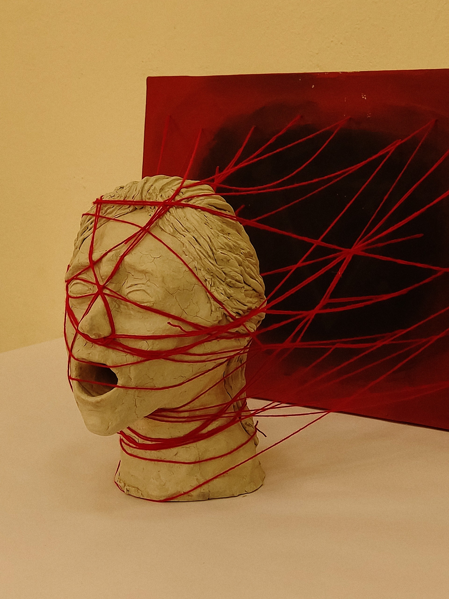

Impotencia emocional

Concepto
Aquí se desarrolla la propuesta conceptual de la pieza. Se explica la intención estética, el contexto de producción y el discurso que articula la obra.
Explicación detallada del proceso técnico, experimentación con materiales y decisiones de montaje.